Episode 01
2026,
in review.
The rooms where San Antonio’s learners and builders found each other this year.

Spotlight 01
Geeks && {...}
Spotlight 01 · the event
AI April.
April 3 → May 2, 2026
A month of AI talks, demos and builds, in its second year, ending in the AI April Showcase.


Spotlight 02
ACM San Antonio & Greater Gaming Society
Spotlight 02 · the event
VelociCode 2.
July 1 → August 1, 2026
A month-long game jam: workshops, a playtest night, and a community showcase at St. Mary’s University.
Spotlight 03 · the events
Two rooms, run by students.
- Oct 3RowdyHacks XII the largest hackathon in San Antonio
- RowdyCyberCon


Spotlight 04